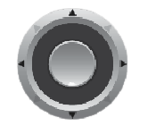

Untuk android, gunakan icon untuk menggerakkan maju mundur kiri kanan dan untuk melompat bisa menggunakan icon. Sedangkan untuk rotasi bisa menyentuh bagian layar Untuk Keyboard, gunakan tombol tanda panah yang ada di keyboard untuk maju mundur kiri kanan dan tombol spasi untuk melompat. Sedangkan untuk rotasi bisa menggunakan kursor atau touchpad.
Pendirian Universitas diawali dengan diskusi pimpinan, beberapa dosen dan staf STIP-US dan STT-US yang kemudian direspon oleh Pemerintah Daerah melalui Pidato Bupati pada Kuliah Umum September 2008. Tahun 2009 berkembang ide bukan hanya penyatuan dua Sekolah Tinggi yang berada dalam naungan Yayasan Perguruan Tinggi Kuantan Singingi tetapi juga menyatukan STAI yang berada di bawah Yayasan Pendidikan Tinggi Islam Kuantan Singingi. Untuk mempermudah dan efisiensi pengelolaan, maka perlu penyatuan Sekolah Tinggi yang ada di Kabupaten Kuantan Singingi ke dalam bentuk Universitas yang dikelola oleh satu Yayasan.
Perguruan Tinggi yang akan didirikan berbentuk Universitas dengan nama Universitas Islam Kuantan Singingi Merupakan gabungan tiga Sekolah Tinggi yang ada. Ketiga Sekolah Tinggi dimaksud berada dalam naungan dua Yayasan. Yayasan Perguruan Tinggi Kuantan Singingi mengelola Sekolah Tinggi Ilmu Pertanian Unggulan Swarnadwipa (STIP-US) dan Sekolah Tinggi Teknologi Unggulan Swarnadwipa (STT-US) dengan akta notaris“ Tito Utoyo, SH, tanggal 30 Juni 2000, nomor 92dan berhasil diperoleh izin tanggal 5 Juli 2001, dengan No. Izin : 66/D/O/2001.Sedangkan Yayasan Pendidikan Tinggi Islam Kuantan Singingi menaungi Sekolah Tinggi Agama Islam (STAI) dengan Akta Notaris Tajib Raharjo SH, tanggal 24 Mei 2002 Nomor 152 dan izin operasional Atas nama Menteri Agama RI, Koordinator Perguruan Tinggi Agama Islam (Kopertais) Wilayah XII Riau-Kepri, tanggal 21 September 2002 nomor: 12/ XII/ K/2002.
Kunjungi website https://uniks.ac.id untuk mengetahui lebih lanjut.
Visi dari Fakultas Teknik:
”Terwujudnya Fakultas Teknik yang Unggul dibidang Pengembangan Sains, Teknologi, dan Ilmu Komputer yang Terintegrasi dengan Islam di Sumatera pada Tahun 2034.”
Misi dari Fakultas Teknik:
Nama : Rosa Mei Shella
NPM : 190210034
Program Studi : Teknik Informatika
Fakultas : Teknik
Email : rosameishella@gmail.com